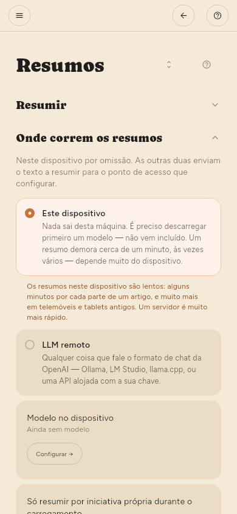

← Ler · Índice · Encontrar coisas →
Resumos
Onde se fazem os resumos
Configuração › Básico › Resumos › Onde correm os resumos.
- Este dispositivo — um modelo que transfere. Nada sai da máquina. É mais lento e gasta bateria: alguns minutos por cada parte de um artigo, e muito mais em telemóveis e tablets antigos.
- LLM remoto — o seu próprio servidor, ou uma API na nuvem. Mais rápido, custa dinheiro, e é a única altura em que o texto de um artigo vai para algum lado.
Cada um tem a sua página em Avançado: Modelo no dispositivo para este dispositivo, Servidor LLM para um servidor. As duas páginas estão sempre lá; a que não está em uso diz isso no topo.

Escolher um modelo
Configuração › Avançado › Modelo no dispositivo › Encontrar um modelo. Pesquise, abra as Variantes de um resultado para ver os ficheiros que tem — diferem no tamanho, e é o tamanho que decide se um cabe — e transfira o que quiser.
Os modelos transferidos aparecem em Configuração › Avançado › Modelo no dispositivo › Modelos neste dispositivo. Iniciar carrega um e torna-o o modelo que responde — iniciá-lo é a forma de o escolher. Só corre um de cada vez, por isso iniciar outro pede confirmação: o modelo em memória tem de sair antes de o seguinte entrar. A escolha fica lembrada, e Carregá-lo ao iniciar a aplicação volta a carregá-lo sozinho. Eliminar apaga os ficheiros e a linha ao mesmo tempo.
Alguns modelos não correm de todo aqui — um ficheiro pode exigir suporte gráfico que esta versão não tem forma de pedir, e a aplicação diz isso em vez de tentar de novo.
Resumos automáticos (só Premium)
Os resumos automáticos fazem parte da Premium. Os resumos correm no fim de uma verificação de artigos novos. Não há um horário próprio — se Configuração › Básico › Obtenção › Com que frequência procurar novidades estiver em Só quando eu pedir, nada é resumido a não ser que o peça.
Duas coisas decidem o que uma verificação resume:
- Por fonte. Cada feed tem um interruptor Resumir, desligado por omissão. Defina-o no painel do feed ou em Configuração › Básico › Fontes › Fontes.
- Por verificação. Configuração › Básico › Resumos › Resumos ao mesmo tempo define quantos uma verificação pode fazer e por que ponta da fila começa.
| Definição | Significado |
|---|---|
| Resumos por verificação | Por omissão 30. Sem limite faz tudo o que está à espera |
| Processar | Mais recentes acompanha o que chega. Mais antigos despacha o atraso |
O texto de um artigo é obtido durante a verificação, não depois — até vinte por feed em cada ronda, os mais recentes primeiro. Um artigo que chega sem o texto normalmente falhou, não ficou adiado, e o leitor diz qual foi o caso.
Mais recentes é o certo no dia a dia. Se chegarem mais por verificação do que o número permite, os que ficam de fora atrasam-se mais a cada verificação — Mais antigos é a forma de voltar a eles.
Cada resumo é um pedido. Num modelo pago, o número por verificação é o que cada verificação custa enquanto não está a ver — vale a pena escolhê-lo em vez de lá chegar por acaso.
Resumir à mão
- Um artigo — abra-o e prima Resumir.
- Um feed — no painel dele, Resumir esta fonte.
- O que estiver filtrado — o botão Resumir tudo no painel de filtros. Diz quantos vai fazer, e esse número é o que faz.
Em que idioma fica um resumo
Por omissão, no idioma em que o artigo está escrito. Configuração › Básico › Resumos › Idioma dos resumos sobrepõe-se a isso se preferir ler sempre os resumos num só idioma.
Se nada for resumido
A causa mais comum é não haver nenhum modelo carregado. A notificação diz isso, e Configuração › Avançado › Depuração › Rastreio regista o motivo de cada tentativa.